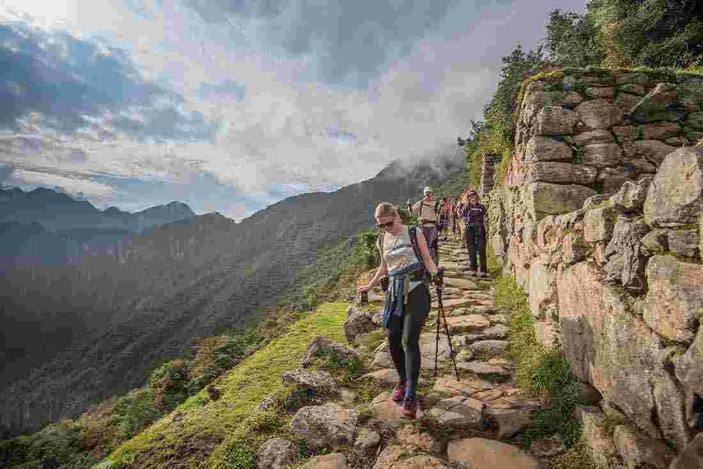
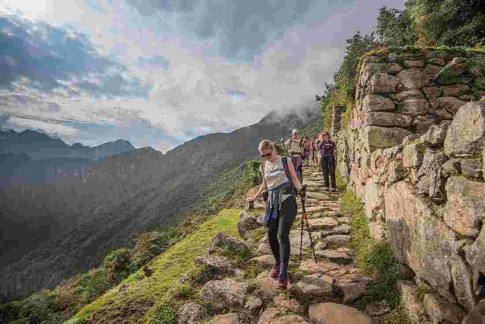
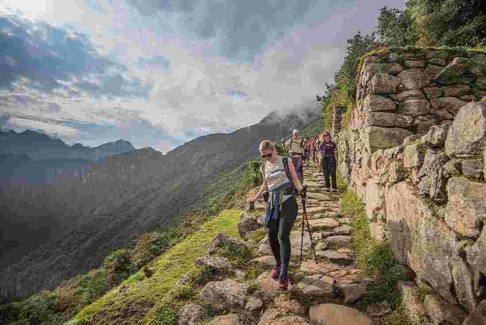
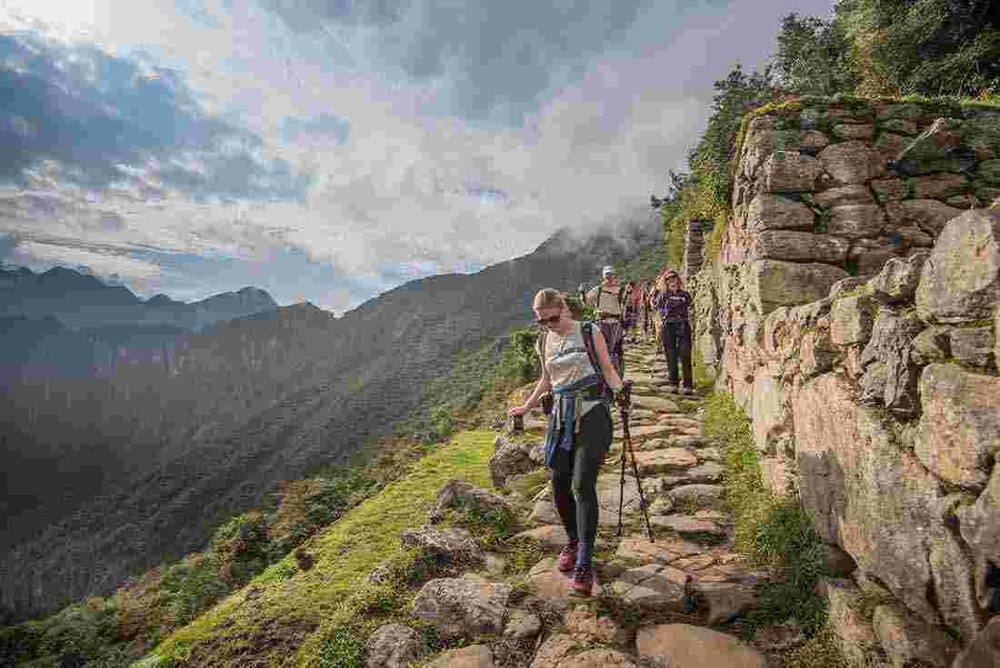

 

Nestled in the heart of the majestic Canadian Rockies, the lovable town of Jasper personifies Canada (and Canadians) in so many ways.
Do you think of pointy snow capped peaks? Misty coastlines with a single white and red lighthouse? Do you see kids playing hockey on a frozen lake or skiers shooting down a steep mountain face?
Maybe, if you’re not from Canada, you think of bearded lumberjacks paddling in a red canoe eating Canadian bacon smothered in maple syrup while singing Bryan Adams’ greatest hits?
Being Canadians who write about travel, we’re often asked, “Where should I go when I visit Canada for the first time?” It’s a great question.
The answer, however, is not so simple. Canada is huge. In fact, you can fit every European country in Canada (seriously, Google it – I know you want to). We’ve spent the past few years exploring much of Western Canada, so our first response is typically destinations in British Columbia, like Vancouver, Whistler, Victoria, Tofino, the Okanagan, etc.
But, having recently visited the town of Jasper in both summer and winter, we’ve come to the conclusion that Jasper takes the title as the most “Canadian” town in Canada. This is especially true when it’s covered under a blanket of snow (https://travelingcanucks.com/2019/11/jasper-might-just-canadian-town-canada/).
The wild, rugged Yukon has lured people from all over the world for hundreds of years. Home of the Klondike gold rush, thousands of kilometres of dense bush, and some of the most beautiful mountain ranges in Canada (I’m looking at you Tombstone Mountain Range). The Yukon is this mysterious territory where art meets manliness, where nature meets quirky towns and cities, where people don’t take anything too serious, except when it comes to making people laugh. SourToe Cocktails, gold miners trying to strike it rich, and 1:00am sunsets are sure to raise some eyebrows. The Yukon is too weird, too wild not to include in this list.
Picture massive valleys, mild temperature, vineyards, warm lakes, wind and kite surfers, boaters, and cute beaches. The Okanagan Valley is often skipped by visitors in lieu of the nearby mountains. A weekend in the Okanagan is well worth the small detour, particularly in the summer. Rent a car, a bike, or a boat, and find yourself exploring this unique BC countryside. Panoramic views of this beautiful part of Canada will leave you with empty SD cards and countless warm memories. Or possibly a hangover, as the wine is delightful.
The prairies we know in Canada are not same prairies that existed 300 years ago. Once upon a time, a large part of Alberta, Saskatchewan, and Manitoba were covered in grasslands, feeding herds upon herds of wild bison. Before the fields of wheat, barley, canola and flax, there was grass, and lots of it. Visiting the Grasslands National Park lets you truly experience what that would have been like. It has become a refuge for wildlife, flora, and some of the most beautiful sunsets in the world. If you want to really take it in, camping for a night or two in these parts is a must, just be on the guard for the wild bison, rattlesnakes, and the thousands of prairie dogs that live in these parts.
https://ibackpackcanada.com/16-must-see-canadian-destinations/